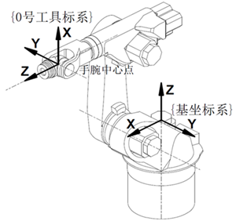

1.1了解工业机器人
1.1.3 工业机器人的坐标系
工业机器人一般有四个坐标系，基坐标系、关节坐标系、工具坐标系、工件坐标系。
基坐标系（即卡笛尔坐标系），内部通过机械数值运算出来。基坐标系原点位于J1与J2关节轴线的公垂线在J1轴线上的交点处，Z轴与关节轴线重合；X轴与J1与J2关节轴线的公垂线重合，从J1指向J2关节；Y轴按右手螺旋法则确定，坐标系方向如图 1-3所示。基坐标系是其它坐标系的基础，工具坐标系和工件坐标系在基坐标系下定义的。在基坐标系中显示的数值是工具坐标系的位姿，即X、Y、Z值为工具坐标系原点在基坐标系中的位置，A、B、C值为工具坐标系坐标轴在基坐标系中的方位。

图1-3 HSR-612工业机器人参考坐标系
关节坐标系，即为每个轴相对原点位置的绝对角度。机器人控制系统对各关节正方向的定义如图1-3所示。可以简单地记为J2、J3、J5关节以“抬起/后仰”为正，“降下/前倾”为负；J1、J4、J6关节满足“右手定则”，即拇指沿关节轴线指向机器人末端，则其它四指方向为关节正方向。在关节坐标系中可以进行单个轴的移动操作。
工具坐标系，即安装在机器人末端的工具坐标系，原点及方向都是随着末端位置与角度不断变化的。HSR-612工业机器人默认0号工具坐标系位于J4、J5、J6关节轴线共同的交点处。Z轴与J6关节轴线重合；X轴与J5与J6关节轴线的公垂线重合；Y轴按右手螺旋法则确定，坐标系方向如图 1-3所示。该坐标系实际是将基坐标系通过旋转及位移变化而来的。
工件坐标系，即用户自定义坐标系。工件坐标系是在工具活动区域内相对于基坐标系设定的坐标系。可通过坐标系标定或者参数设置来确定工件坐标系的位置和方向。每一个工件坐标系与标定工件坐标系时使用的工具相对应。对机器人编程时就是在工件坐标系中创建目标和路径。如果工具在工件坐标系A中和在工件坐标系B中的轨迹相同，则可将A中的轨迹复制一份给B，无需对一样的重复轨迹编程。所以巧妙的建立和应用工件坐标系可以减少示教点数，简化示教编程过程。